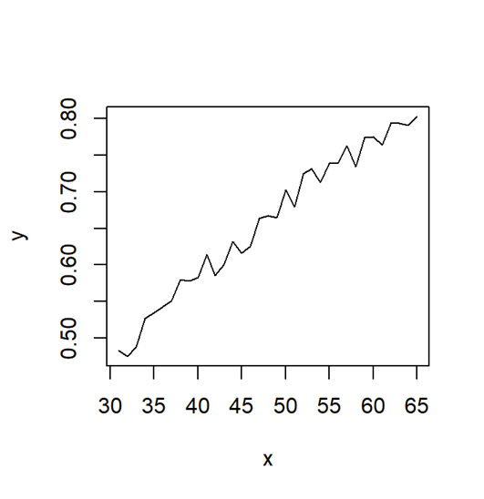

置换检验的一般步骤
采用不放回的方式随机抽取样本，打乱数据原有的结构；
计算打乱后数据的统计量；
重复上述过程n次，形成零假设分布；
根据原数据统计量在零假设分布中的位置判断显著性。

如何检查这两个条件下的RT是否有显著差异呢？
配对样本t检验?
[1] 17 6 10 4 12 9 3 2 5 19 20 15 8 16 13 14 18 7 11 1
[1] 0.0982Bootstrap: Estimating correlation

Bootstrap: Estimating correlation
expand for full code
# Bootstrap抽样函数,抽取50个子样本
bootstrap_sample <- function(data, size=50) {
n <- nrow(data)
indices <- sample(1:n, replace = TRUE, size = size)
bootstrap_sample <- data[indices, ]
return(bootstrap_sample)
}
# 重复抽样3次
k <- 3
# 存储统计量和回归模型
statistics_beta <- numeric(k)
statistics_R2 <- numeric(k)
models <- list()
# 进行bootstrap抽样、计算统计量、绘制散点图和拟合直线
for (i in 1:k) {
#抽样
bootstrap_sample_data <- bootstrap_sample(data,size=50)
# 计算统计量 beta 和 R^2
x <- bootstrap_sample_data$Exam
y <- bootstrap_sample_data$Anxiety
model <- lm(y ~ x)
beta <- coef(model)[2]
R2 <- summary(model)$r.squared
# 存储统计量和回归模型
statistics_beta[i] <- beta
statistics_R2[i] <- R2
models[[i]] <- model
# 绘制散点图和拟合直线
p <- ggplot(bootstrap_sample_data, aes(x = Exam, y = Anxiety)) +
geom_point() +
geom_smooth(method = "lm", se = FALSE, color = "red", linetype = "solid", size = 2) +
labs(title = paste("Bootstrap Sample", i), x = "Exam", y = "Anxiety") +
annotate("text", x = Inf, y = Inf, label = paste("β =", round(beta, 3), "\nR^2 =", round(R2, 3)),
hjust = 1, vjust = 1, size = 4, color = "black") +
papaja::theme_apa() #
print(p)
}


估计焦虑与考试成绩的相关系数
expand for full code
library(boot)
# 定义相关系数的统计量函数
statistic <- function(data, indices) {
sampled_data <- data[indices, ]
model <- lm(sampled_data$Anxiety ~ sampled_data$Exam)
beta <- coef(model)[2]
return(beta)
}
# 进行1500次bootstrap抽样与计算统计量
bootstrap_results <- boot(data = data, statistic = statistic, R = 2000)
# 绘制beta的直方图
hist(bootstrap_results$t, main = "Bootstrap Distribution of Beta",
xlab = "Beta Coefficient", ylab = "Density", col = "grey", freq = FALSE, breaks = 80)
mean_beta <- mean(bootstrap_results$t)
abline(v = mean_beta, col = "green", lty = 2)
expand for full code

BOOTSTRAP CONFIDENCE INTERVAL CALCULATIONS
Based on 2000 bootstrap replicates
CALL :
boot.ci(boot.out = bootstrap_results, type = "bca")
Intervals :
Level BCa
95% (-0.2495, -0.1247 )
Calculations and Intervals on Original Scale估计焦虑与考试成绩的决定系数。
expand for full code
library(boot)
# 定义决定系数的统计量函数
statistic <- function(data, indices) {
sampled_data <- data[indices, ]
model <- lm(sampled_data$Anxiety ~ sampled_data$Exam)
R2 <- summary(model)$r.squared
return(R2)
}
# 进行1500次bootstrap抽样与计算统计量
bootstrap_results <- boot(data = data, statistic = statistic, R = 1200)
# 绘制beta的直方图
hist(bootstrap_results$t, main = "Bootstrap Distribution of R^2",
xlab = "R^2", ylab = "Density", col = "grey", freq = FALSE, breaks = 80)
mean_R2 <- mean(bootstrap_results$t)
abline(v = mean_R2, col = "green", lty = 2)
expand for full code

BOOTSTRAP CONFIDENCE INTERVAL CALCULATIONS
Based on 1200 bootstrap replicates
CALL :
boot.ci(boot.out = bootstrap_results, type = "bca")
Intervals :
Level BCa
95% ( 0.1049, 0.3833 )
Calculations and Intervals on Original Scale
[1] "Cohen′d = -0.906381585851366"估计焦虑对考试成绩影响的效应大小
expand for full code
# 定义Cohen's d的统计量函数
bootstrap_cohens_d <- function(data, indices) {
sampled_data <- data[indices, ]
group_A <- subset(sampled_data, Anxiety_1 == "high")$Exam
group_B <- subset(sampled_data, Anxiety_1 == "low")$Exam
mean_A <- mean(group_A)
mean_B <- mean(group_B)
SS_A <- sum((group_A - mean_A)^2)
SS_B <- sum((group_B - mean_B)^2)
n_A <- length(group_A)
n_B <- length(group_B)
cohen.d <- (mean_A - mean_B) / sqrt((SS_A + SS_B) / (n_A + n_B - 2))
return(cohen.d)
}
# 进行1500次Bootstrap
bootstrap_results <- boot(data = data, statistic = bootstrap_cohens_d, R = 1500)
# 绘制Cohen's d的直方图
hist(bootstrap_results$t, main = "Bootstrap Distribution of Cohen's d",
xlab = "Cohen's d", ylab = "Density", ", col = 'grey", freq = FALSE, breaks = 100)
mean_d <- mean(bootstrap_results$t)
abline(v = mean_d, col = 'green', lty = 2)
expand for full code

BOOTSTRAP CONFIDENCE INTERVAL CALCULATIONS
Based on 1500 bootstrap replicates
CALL :
boot.ci(boot.out = bootstrap_results, type = "bca")
Intervals :
Level BCa
95% (-1.3688, -0.4882 )
Calculations and Intervals on Original Scale描述假数据
Descriptive Statistics:
─────────────────────────────────────────────────────
N Mean SD | Median Min Max Skewness Kurtosis
─────────────────────────────────────────────────────
100 5.18 1.83 | 5.12 0.38 9.37 0.06 -0.22
─────────────────────────────────────────────────────
expand for full code
# 直方图
hist(norm_data, probability = TRUE, main = "Histogram and PDF Comparison",
xlab = "Values", ylab = "Density", col = "lightblue", border = "black")
# 理论概率密度函数曲线
curve(dnorm(x, mean = 5, sd = 2),
col = "red", lwd = 2, add = TRUE, yaxt = "n")
legend("topright", legend = c("Histogram", "theoretical pdf"), fill = c("lightblue", "red"))

expand for full code
Asymptotic one-sample Kolmogorov-Smirnov test
data: norm_data
D = 0.093, p-value = 0.35
alternative hypothesis: two-sided描述假数据
Descriptive Statistics:
─────────────────────────────────────────────────────
N Mean SD | Median Min Max Skewness Kurtosis
─────────────────────────────────────────────────────
100 4.99 1.57 | 5.00 0.00 9.00 -0.17 0.14
─────────────────────────────────────────────────────
expand for full code
# 计算理论的二项分布pdf
x <- seq(0, 10, by = 1)
theory_pdf <- dbinom(x, size = 10, prob = 0.5)
# 绘制直方图
hist(binomial_data, breaks = seq(-0.5, 10.5, by = 1), col = "lightblue", main = "Comparison of Empirical and Theoretical Binomial Distribution", xlab = "Number of Successes")
# 添加理论PDF曲线
lines(x, theory_pdf * length(binomial_data), type = "h", col = "red", lwd = 2)
expand for full code

expand for full code
Chi-squared test for given probabilities
data: observed_table
X-squared = 49.1, df = 99, p-value = 1
我们可以看到随着样本量的变化，在效应量(Cohen’s d)为0.5和显著性水平为0.05的情况下，随着各组样本量不断增大，统计检验力不断增大。
要达到80%的统计检验力，我们需要各组人数均为65人左右，即需要搜集130名被试。
